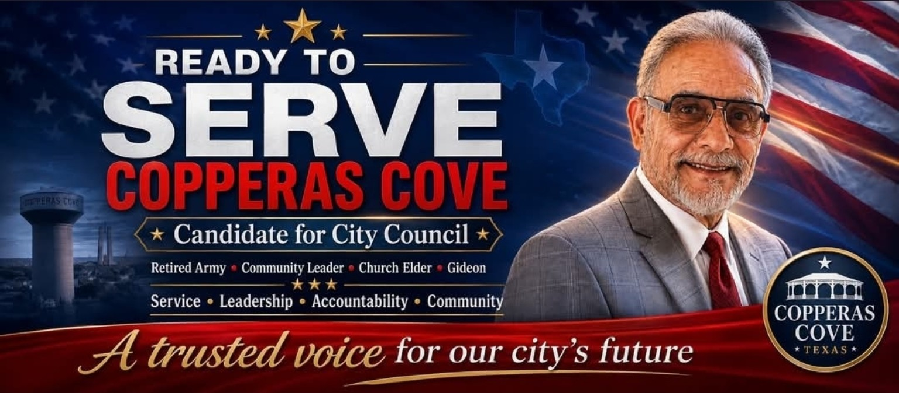

Strong Neighborhoods
Protect the quality of life that makes Copperas Cove home and keep residents at the center of city decisions.
COPPERAS COVE, I'M READY TO SERVE.
Jesus Mendez is running for Copperas Cove City Council Place 6 to bring service, steady leadership, accountability, and a community-first voice to City Hall.

MEET JESUS MENDEZ
Serving others has always been an important part of Jesus Mendez's life. A retired U.S. Army veteran, community leader, church elder, and Gideon, he believes leadership means listening to the people you represent and doing what is right for the community.
He is running for Place 6 because he loves Copperas Cove and believes the city has an incredible future ahead.
Connect with Jesus →A COMMUNITY-FIRST APPROACH
Protect the quality of life that makes Copperas Cove home and keep residents at the center of city decisions.
Plan for the city's future carefully while respecting taxpayers, infrastructure, and existing neighborhoods.
Keep attention on the basic services residents depend on and expect from local government.
Support the people and services that help keep Copperas Cove families and neighborhoods safe.
Promote responsible leadership, transparency, and respect for the public trust.
Make citizen concerns part of the conversation and keep communication with residents open.
“This campaign isn't about me. It's about our community and its future.”
— Jesus Mendez
READY TO SERVE COPPERAS COVE
Follow the campaign, share it with your Copperas Cove friends and neighbors, and help Jesus hear directly from the community.
CONTACT THE CAMPAIGN
Have a question, concern, or idea for Copperas Cove? Reach out directly.